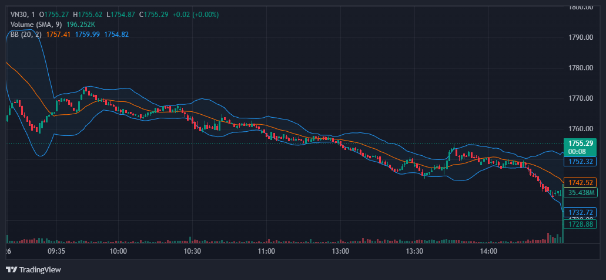
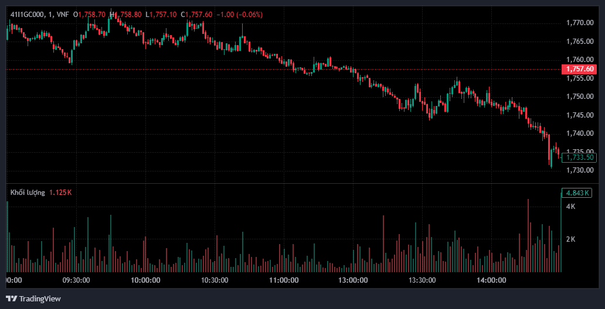
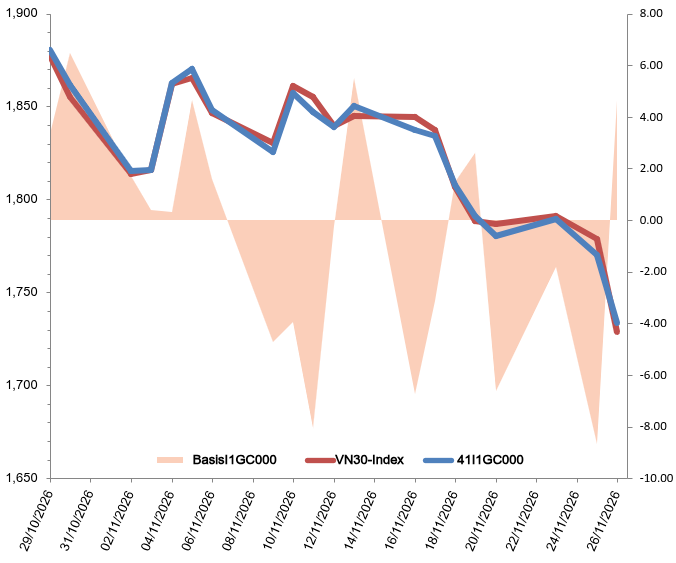

Nhận định chỉ số VN30 ngày 27/11/2026 cho thấy thị trường đang đối mặt với áp lực điều chỉnh đáng kể sau khi VN30-Index tiếp tục giảm trong phiên 26/11. Việc chỉ số xuyên thủng vùng đáy cũ, đi kèm thanh khoản gia tăng và mẫu hình nến giảm mạnh, phản ánh tâm lý thận trọng của thị trường. Trong khi đó, hợp đồng tương lai VN30 cũng đồng loạt mất điểm, cho thấy những biến động tiêu cực vẫn đang chi phối diễn biến ngắn hạn.
Tổng quan thị trường VN30
Kết thúc phiên giao dịch ngày 26/11/2026, VN30-Index dừng tại 1.728,88 điểm. Đây tiếp tục là một phiên giảm đáng chú ý của nhóm cổ phiếu vốn hóa lớn khi áp lực bán gia tăng trong quá trình giao dịch, đặc biệt vào phiên chiều. Diễn biến này cho thấy bên bán vẫn đang chiếm ưu thế, trong khi lực cầu chưa đủ mạnh để giúp chỉ số ổn định trở lại.
Điểm cần quan tâm là VN30-Index không chỉ giảm về mặt điểm số mà còn đi kèm khối lượng giao dịch vượt mức trung bình 20 phiên. Khi thanh khoản tăng trong một phiên giảm mạnh, điều này thường phản ánh hoạt động bán ra diễn ra quyết liệt hơn so với những phiên điều chỉnh thông thường. Tâm lý thị trường vì vậy vẫn nghiêng về trạng thái thận trọng.

Phân tích xu hướng VN30
Xét trên phương diện ngắn hạn, xu hướng của VN30-Index đang nghiêng về chiều hướng tiêu cực. Chỉ số đã xuyên thủng vùng đáy hình thành trong tháng 03/2026, tương ứng khoảng 1.740–1.775 điểm. Đây là khu vực từng đóng vai trò hỗ trợ trong quá trình vận động trước đó. Việc giá đóng cửa xuống dưới vùng này cho thấy cấu trúc kỹ thuật đã suy yếu đáng kể.
Khi một vùng hỗ trợ quan trọng bị phá vỡ, thị trường thường cần thêm thời gian để kiểm tra lại khả năng cân bằng cung cầu. Nếu lực bán tiếp tục duy trì ở mức cao, vùng hỗ trợ cũ có thể chuyển thành khu vực cản trở quá trình phục hồi. Ngược lại, việc chỉ số sớm ổn định và xuất hiện lực cầu cải thiện sẽ giúp giảm bớt áp lực tiêu cực.
Một tín hiệu đáng chú ý khác đến từ đồ thị nến. Trong phiên 26/11, VN30-Index hình thành mẫu hình Big Black Candle, tức cây nến giảm có thân dài. Mẫu hình này xuất hiện khi bên bán chiếm ưu thế rõ rệt trong phần lớn thời gian giao dịch. Đáng lưu ý, khối lượng đi kèm còn vượt mức trung bình 20 phiên, làm tăng mức độ đáng chú ý của tín hiệu giảm.
Sự kết hợp giữa nến giảm mạnh, thanh khoản gia tăng và việc xuyên thủng vùng đáy cũ cho thấy áp lực cung chưa có dấu hiệu suy yếu rõ ràng. Tuy nhiên, một phiên giảm sâu chưa đủ để khẳng định xu hướng giảm sẽ kéo dài liên tục. Diễn biến các phiên tiếp theo vẫn cần được quan sát để đánh giá khả năng xuất hiện lực cầu cân bằng.
Phân tích chỉ báo kỹ thuật
Trên đồ thị kỹ thuật, chỉ báo MACD tiếp tục thể hiện trạng thái suy yếu sau khi đường MACD cắt xuống dưới đường tín hiệu. Đây là dấu hiệu cho thấy động lượng tăng trước đó đã suy giảm, đồng thời áp lực bán vẫn đang chi phối diễn biến của chỉ số. Khi tín hiệu này xuất hiện cùng với việc giá phá vỡ vùng hỗ trợ quan trọng, triển vọng ngắn hạn cần được đánh giá thận trọng hơn.
Bên cạnh đó, Bollinger Bands cho thấy VN30-Index tiếp tục vận động sát dải dưới (Lower Band). Đây là khu vực phản ánh vùng giá thấp trong biên độ biến động được xác định bởi chỉ báo. Khi chỉ số liên tục bám dải dưới trong một xu hướng giảm, điều đó thường cho thấy áp lực bán đang duy trì tương đối mạnh, thay vì chỉ xuất hiện trong một vài thời điểm ngắn.

Về độ biến động, việc giá di chuyển gần dải dưới kết hợp với thanh khoản tăng cho thấy thị trường đang trải qua giai đoạn chịu áp lực đáng kể. Tuy nhiên, không nên mặc định rằng việc chạm hoặc bám Lower Band đồng nghĩa với khả năng đảo chiều tăng. Trong những xu hướng giảm mạnh, giá có thể tiếp tục vận động dọc theo dải dưới trong nhiều phiên.
Nhìn chung, các tín hiệu kỹ thuật hiện tại chưa cho thấy sự cải thiện rõ rệt. MACD vẫn yếu, vùng đáy cũ đã bị xuyên thủng và Bollinger Bands tiếp tục phản ánh trạng thái suy giảm. Khả năng phục hồi của VN30-Index vì vậy cần được đánh giá dựa trên sự cải thiện thực tế của giá và thanh khoản, thay vì chỉ dựa vào một tín hiệu đơn lẻ.
Phân tích nhóm cổ phiếu tác động đến VN30
VN30-Index được cấu thành từ nhóm cổ phiếu vốn hóa lớn trên thị trường, do đó biến động của các doanh nghiệp thành phần có thể ảnh hưởng đáng kể đến điểm số chung. Trong những phiên thị trường điều chỉnh mạnh, diễn biến của các cổ phiếu có tỷ trọng lớn thường được quan tâm vì có khả năng tác động trực tiếp đến mức tăng hoặc giảm của chỉ số.
Đặc biệt, các nhóm ngành ngân hàng, bất động sản và chứng khoán thường là những nhóm cần theo dõi khi đánh giá trạng thái của thị trường cổ phiếu vốn hóa lớn. Đây là những nhóm có nhiều doanh nghiệp niêm yết được nhà đầu tư quan tâm, đồng thời có thể chịu ảnh hưởng từ biến động lãi suất, dòng tiền và kỳ vọng kinh tế.
Tác động từ diễn biến chung của thị trường
Trong phiên 26/11, VN-Index giảm gần 58 điểm trước áp lực bán gia tăng liên quan đến thông tin thuế quan của Mỹ. Diễn biến này cho thấy tâm lý thận trọng không chỉ xuất hiện ở nhóm cổ phiếu VN30 mà còn lan rộng trên thị trường chung. Khi chỉ số đại diện cho toàn thị trường giảm sâu, tâm lý phòng thủ có thể ảnh hưởng đến hoạt động giao dịch của nhiều nhóm cổ phiếu vốn hóa lớn.
Bên cạnh yếu tố bên ngoài, thông tin liên quan đến chính sách thương mại quốc tế cũng là vấn đề cần theo dõi. Những thay đổi trong chính sách thuế quan có thể tác động đến kỳ vọng về hoạt động xuất khẩu, triển vọng kinh doanh và tâm lý của nhà đầu tư đối với các doanh nghiệp trong nước.
Đối với VN30, điều quan trọng là theo dõi sự đồng thuận giữa các cổ phiếu thành phần. Nếu áp lực giảm chỉ tập trung ở một số mã lớn, tác động đến chỉ số có thể khác với trường hợp nhiều nhóm ngành cùng suy yếu. Do đó, độ rộng thị trường và mức độ đóng góp của từng cổ phiếu vẫn là những yếu tố cần được quan sát trong các phiên tiếp theo.
Phân tích hợp đồng tương lai chỉ số VN30
Trên thị trường phái sinh, các hợp đồng tương lai VN30 đồng loạt giảm điểm trong phiên 26/11/2026. Hợp đồng gần nhất có mã 41I1GC000 đóng cửa tại 1.733,5 điểm, giảm 36,4 điểm, tương ứng mức giảm 2,06%. Diễn biến này phản ánh áp lực điều chỉnh của thị trường cơ sở đã tác động đáng kể đến giá các hợp đồng tương lai.

Trong phiên sáng, hợp đồng có thời điểm vận động giằng co, tuy nhiên áp lực bán gia tăng vào buổi chiều khiến giá suy yếu mạnh hơn về cuối phiên. Việc bên mua chưa thể tạo được lực đỡ đủ lớn cho thấy tâm lý thị trường vẫn còn thận trọng. Đến khi kết thúc phiên, hợp đồng đóng cửa ở mức thấp hơn đáng kể so với giá tham chiếu.
Diễn biến basis của hợp đồng tương lai VN30
Kết thúc phiên 26/11, basis của hợp đồng 41I1GC000 đạt +4,62 điểm, đảo chiều so với phiên trước đó. Basis được xác định bằng cách lấy giá hợp đồng tương lai trừ đi giá trị chỉ số VN30-Index. Với mức giá đóng cửa 1.733,5 điểm của hợp đồng và 1.728,88 điểm của chỉ số cơ sở, mức chênh lệch tương ứng là 4,62 điểm.
Basis dương cho thấy giá hợp đồng tương lai đang cao hơn chỉ số cơ sở tại thời điểm đóng cửa. Tuy nhiên, mức chênh lệch này không nên được xem là tín hiệu đủ để kết luận thị trường sẽ phục hồi. Basis còn chịu ảnh hưởng từ thời gian đến đáo hạn, kỳ vọng thị trường, chi phí nắm giữ và cung cầu trên thị trường hợp đồng.

Thanh khoản và biến động của thị trường phái sinh
Một điểm đáng chú ý trong phiên 26/11 là hoạt động giao dịch trên thị trường phái sinh gia tăng đáng kể. Tổng khối lượng và giá trị giao dịch toàn thị trường lần lượt tăng 33,81% và 31,55% so với phiên 25/11. Riêng hợp đồng 41I1GC000 ghi nhận 265.210 hợp đồng được khớp lệnh, tăng 33,78% so với phiên liền trước.
Sự gia tăng thanh khoản trong bối cảnh giá hợp đồng giảm mạnh cho thấy mức độ tham gia của thị trường đang cao hơn. Tuy nhiên, khối lượng giao dịch tăng không đồng nghĩa với việc toàn bộ dòng tiền đều nghiêng về một phía. Chỉ tiêu này phản ánh cường độ hoạt động giao dịch, cần được đặt trong mối tương quan với biến động giá và basis để có đánh giá đầy đủ hơn.
Ngoài ra, khối ngoại tiếp tục bán ròng với tổng khối lượng 223 hợp đồng trong phiên. Đây là yếu tố bổ sung cần được theo dõi khi đánh giá hoạt động của các nhóm nhà đầu tư trên thị trường phái sinh. Dù vậy, dữ liệu bán ròng riêng lẻ không đủ để xác định xu hướng tiếp theo của giá hợp đồng.
Các yếu tố ảnh hưởng cần lưu ý
Đối với phiên giao dịch ngày 27/11/2026, diễn biến của VN30-Index có thể tiếp tục chịu tác động từ nhiều yếu tố đan xen. Trước hết là trạng thái kỹ thuật sau khi chỉ số xuyên thủng vùng đáy cũ 1.740–1.775 điểm. Đây là khu vực có ý nghĩa quan trọng trong việc đánh giá khả năng ổn định trở lại của thị trường.
Bên cạnh đó, thanh khoản gia tăng trong phiên giảm mạnh ngày 26/11 cũng là yếu tố cần quan sát. Nếu khối lượng tiếp tục duy trì ở mức cao trong khi chỉ số chưa thể phục hồi, điều này có thể phản ánh áp lực cung vẫn còn lớn. Ngược lại, nếu lực cầu cải thiện và biên độ giảm thu hẹp, thị trường có thể xuất hiện trạng thái cân bằng hơn.
Yếu tố bên ngoài cũng cần được quan tâm, đặc biệt là những thông tin liên quan đến chính sách thuế quan của Mỹ. Các thay đổi trong chính sách thương mại có thể tác động đến tâm lý của nhà đầu tư quốc tế, kỳ vọng về kinh tế và dòng vốn trên thị trường tài chính. Đây là một trong những nguyên nhân được đề cập trong diễn biến giảm mạnh của VN-Index ngày 26/11.
Ngoài ra, diễn biến của nhóm cổ phiếu vốn hóa lớn và mức độ đồng thuận giữa các ngành sẽ đóng vai trò quan trọng trong việc xác định trạng thái của VN30. Một thị trường phục hồi bền vững thường cần sự cải thiện tương đối rộng, thay vì chỉ phụ thuộc vào một vài cổ phiếu có tỷ trọng lớn.
Trên thị trường hợp đồng tương lai, basis, thanh khoản và sự tương quan giữa giá hợp đồng với chỉ số cơ sở tiếp tục là những dữ liệu đáng chú ý. Việc theo dõi đồng thời các yếu tố này giúp đánh giá rõ hơn sự khác biệt giữa kỳ vọng của thị trường phái sinh và diễn biến thực tế của VN30-Index.
Kết luận nhận định chỉ số VN30 ngày 27/11/2026
Tổng hợp các tín hiệu trong phiên 26/11, VN30-Index đang ở trạng thái kỹ thuật tương đối yếu. Chỉ số đóng cửa tại 1.728,88 điểm, xuyên thủng vùng đáy cũ 1.740–1.775 điểm, đồng thời xuất hiện mẫu hình Big Black Candle với khối lượng giao dịch vượt mức trung bình 20 phiên. Những yếu tố này cho thấy áp lực bán vẫn đang chiếm ưu thế trong ngắn hạn.
Các chỉ báo kỹ thuật cũng chưa đưa ra tín hiệu tích cực rõ ràng khi MACD tiếp tục suy yếu và VN30-Index vẫn bám sát dải dưới của Bollinger Bands. Vì vậy, khả năng xuất hiện những nhịp biến động mạnh vẫn cần được tính đến. Thị trường cần thêm tín hiệu ổn định về giá và thanh khoản để đánh giá khả năng cải thiện xu hướng.
Trên thị trường phái sinh, hợp đồng gần nhất giảm 2,06%, trong khi khối lượng giao dịch tăng đáng kể. Basis đạt mức dương 4,62 điểm, phản ánh giá hợp đồng cao hơn chỉ số cơ sở tại thời điểm đóng cửa. Tuy nhiên, sự khác biệt này không làm thay đổi thực tế rằng cả thị trường cơ sở và hợp đồng tương lai đều vừa trải qua một phiên điều chỉnh mạnh.
Nhìn chung, bức tranh thị trường ngày 27/11 vẫn cần được đánh giá thận trọng. Những phiên tiếp theo sẽ có ý nghĩa trong việc xác định liệu VN30-Index có thể ổn định sau khi phá vỡ vùng hỗ trợ cũ hay tiếp tục chịu sức ép từ bên bán. Nhà đầu tư và người theo dõi thị trường nên chú ý đến diễn biến giá, thanh khoản, độ rộng thị trường và sự thay đổi của các chỉ báo kỹ thuật trước khi đưa ra những đánh giá tiếp theo.
Cập nhật thông tin thị trường tại VN30F Kim Thương
Đối với những người đang tìm hiểu về thị trường chứng khoán Việt Nam, việc cập nhật thông tin thường xuyên và xây dựng nền tảng kiến thức là điều cần thiết. VN30F Kim Thương là website chia sẻ kiến thức về chỉ số VN30, hợp đồng tương lai và những diễn biến đáng chú ý trên thị trường chứng khoán.
Bên cạnh các bài viết kiến thức, website còn cập nhật những bản tin phân tích thị trường, giúp người đọc có thêm góc nhìn về diễn biến chỉ số cơ sở, thanh khoản và các yếu tố kỹ thuật. Những thông tin này mang tính tham khảo, không thay thế cho việc tự nghiên cứu và đánh giá rủi ro tài chính.
Việc hiểu rõ cơ chế hợp đồng, yêu cầu ký quỹ, chi phí và khả năng phát sinh thua lỗ là những nội dung cần được tìm hiểu đầy đủ trước khi cân nhắc bất kỳ sản phẩm tài chính nào. Đặc biệt, hợp đồng tương lai có cơ chế đòn bẩy nên mức độ rủi ro có thể lớn hơn nhiều so với việc chỉ quan sát biến động của chỉ số cơ sở.
Cảnh báo rủi ro: giao dịch phái sinh có đòn bẩy cao và có thể gây thua lỗ vượt quá vốn ký quỹ. Nội dung bài viết chỉ mang tính tham khảo và giáo dục, không phải khuyến nghị đầu tư.